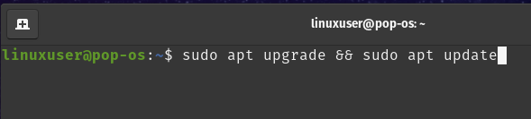

Contenidos
1. Descarga del archivo .iso
El primer paso para la instalacion de linux es la descarga del archivo .iso que sera utilizado para la instalacion del mismo en VirtualBox. En este paso a paso utilizaremos la distribucion de Linux Pop!_os. Para ello descargaremos el archivo del siguiente enlace. Y seleccionaremos la primera opcion.

2. Creacion y configuracion en VirtualBox
Despues de instalar VirtualBox y realizar su configuracion inicial, empezamos con la creacion de la maquina virtual. Tras abrir VirtualBox presionamos el boton "New".

Tras presionar el boton "New", se abrira una ventana para la configuracion de esta. Aqui eligiremos el nombre de la maquina virtual, el archivo .iso, el nombre de usuario, el hardware que queremos que esta tenga y el espacio de disco duro que tendra la maquina virtual.

Como podemos observar se abre una ventana donde insertaremos el nombre de esta, puede ser cualquier nombre que el usuario quiera insertar, y eligiremos nuestro archivo .iso que descargamos anteriormente.

En el siguiente paso le asignaremos memoria RAM y una cantidad de CPUs a la maquina virtual. Le asignaremos 4GB de memoria RAM y 4 CPUs ya que estos son los requisitos minimos recomendables para este sistema.

Por ultimo, asignamos un espacio para el disco dura virtual de la maquina virtual. El minimo recomendado es 20GB.

3. Pop!_os
Una vez instalada y configurada, realizamos la configuracion del sistema por defecto tal y como
se indica en el siguiente enlace.
Al entrar al sistema, abrimos una terminal. Esta se puede abrir presionando en el icono de la terminal,
o presionando la tecla "Windows" y escribiendo "terminal" en el buscador que aparece.
Una vez en la terminal, nos aseguramos de que el sistema operativo este actualizado con los siguientes comandos:
sudo apt upgrade && sudo apt update

4. Samba
Utilizaremos Samba para compartir archivos entre Linux y Windows. Para ello, instalamos Samba con el siguiente comando:
sudo apt install samba

Como todo programa que instalemos en Linux, nos pedira confirmacion para instalarlo. Simplemente escribimos "y" y se continuara la instalacion.